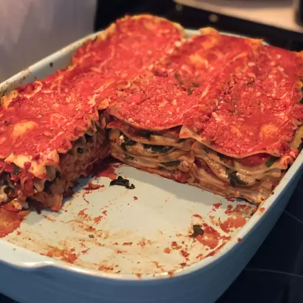

Back to all recipes
Lasagna

Image source is https://www.allrecipes.com/recipe/14069/vegan-lasagna-i/, Photo by Nikki Brunelle
Description
Lasagna is a type of pasta, possibly one of the oldest types, made of very wide, flat sheets.
The dish may be topped with grated cheese, which becomes melted after baking. Typically cooked pasta is assembled with the other ingredients and then baked in an oven. The resulting baked pasta is cut into single-serving square portions.
Ingredients
- 2 tablespoons olive oil
- 1 1/2 cups chopped onion
- 3 tablespoons minced garlic
- 4 (14.5 ounce) cans stewed tomatoes
- 1/3 cup tomato paste
- 1/2 cup chopped fresh basil
- 1/2 cup chopped parsley
- 1 teaspoon salt
- 1 teaspoon ground black pepper
- 1 (16 ounce) package lasagna noodles
- 2 pounds firm tofu
- 2 tablespoons minced garlic
- 1/4 cup chopped fresh basil
- 1/4 cup chopped parsley
- 1/2 teaspoon salt
- ground black pepper to taste
- 3 (10 ounce) packages frozen chopped spinach, thawed and drained
Steps
- Make the sauce: In a large, heavy saucepan, over medium heat, heat the olive oil. Place the onions in the saucepan and saute them until they are soft, about 5 minutes. Add the garlic; cook 5 minutes more.
- Place the tomatoes, tomato paste, basil and parsley in the saucepan. Stir well, turn the heat to low and let the sauce simmer covered for 1 hour. Add the salt and pepper.
- While the sauce is cooking bring a large kettle of salted water to a boil. Boil the lasagna noodles for 9 minutes, then drain and rinse well.
- Preheat the oven to 400 degrees F (200 degrees C).
- Place the tofu blocks in a large bowl. Add the garlic, basil and parsley. Add the salt and pepper, and mash all the ingredients together by squeezing pieces of tofu through your fingers. Mix well.
- Assemble the lasagna: Spread 1 cup of the tomato sauce in the bottom of a 9x13 inch casserole pan. Arrange a single layer of lasagna noodles, sprinkle one-third of the tofu mixture over the noodles. Distribute the spinach evenly over the tofu. Next ladle 1 1/2 cups tomato sauce over the tofu, and top it with another layer of the noodles. Then sprinkle another 1/3 of the tofu mixture over the noodles, top the tofu with 1 1/2 cups tomato sauce, and place a final layer of noodles over the tomato sauce. Finally, top the noodles with the final 1/3 of the tofu, and spread the remaining tomato sauce over everything.
- Cover the pan with foil and bake the lasagna for 30 minutes. Serve hot and enjoy!